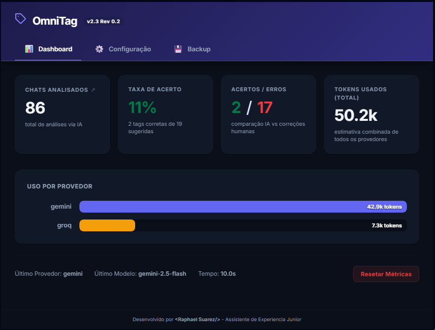
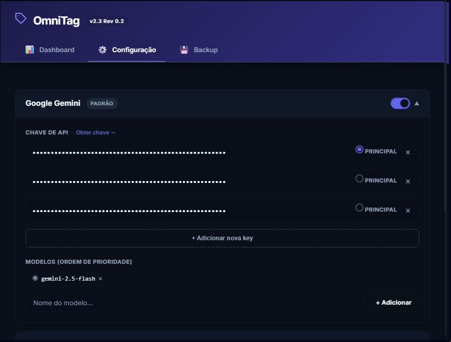
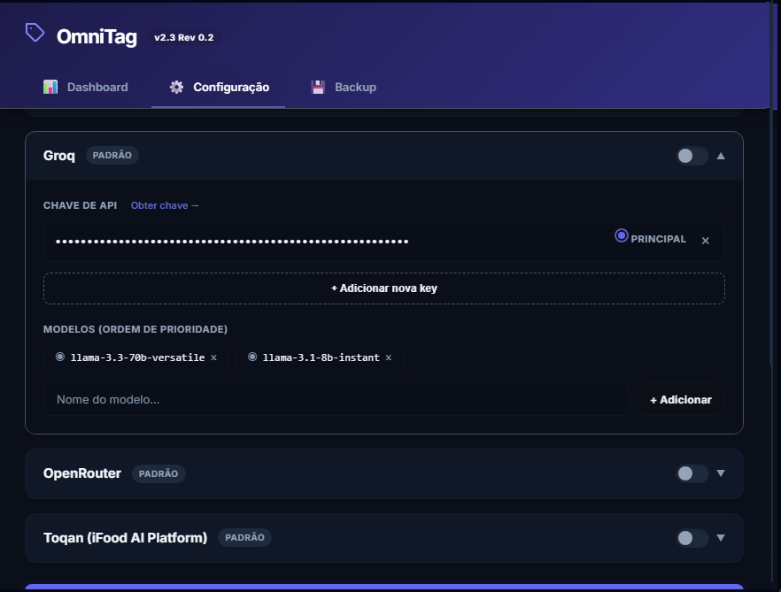
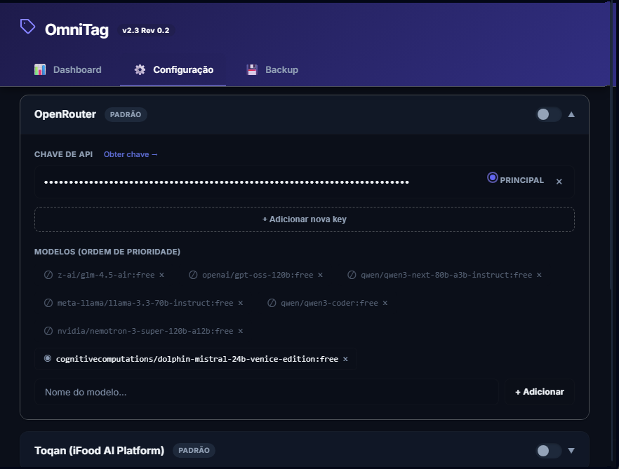
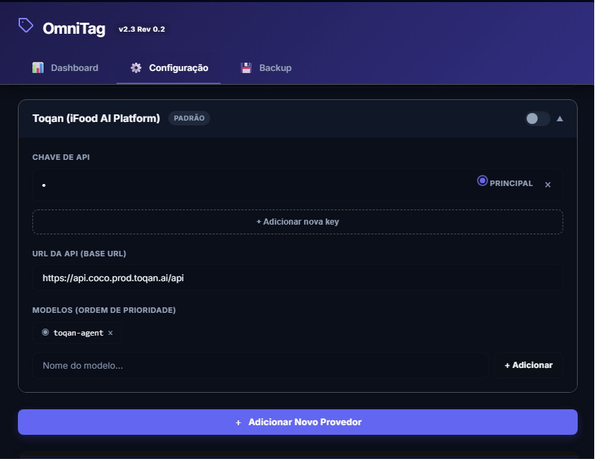
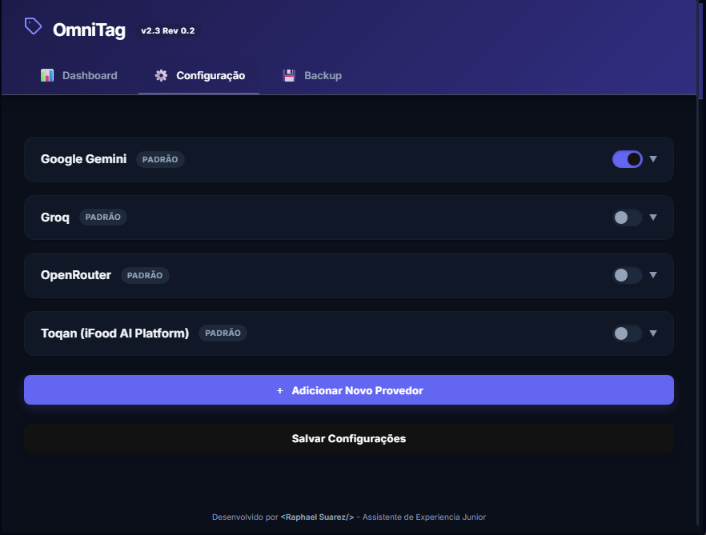
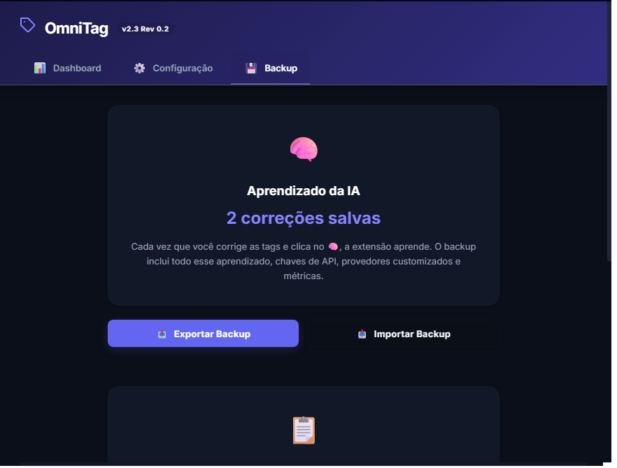
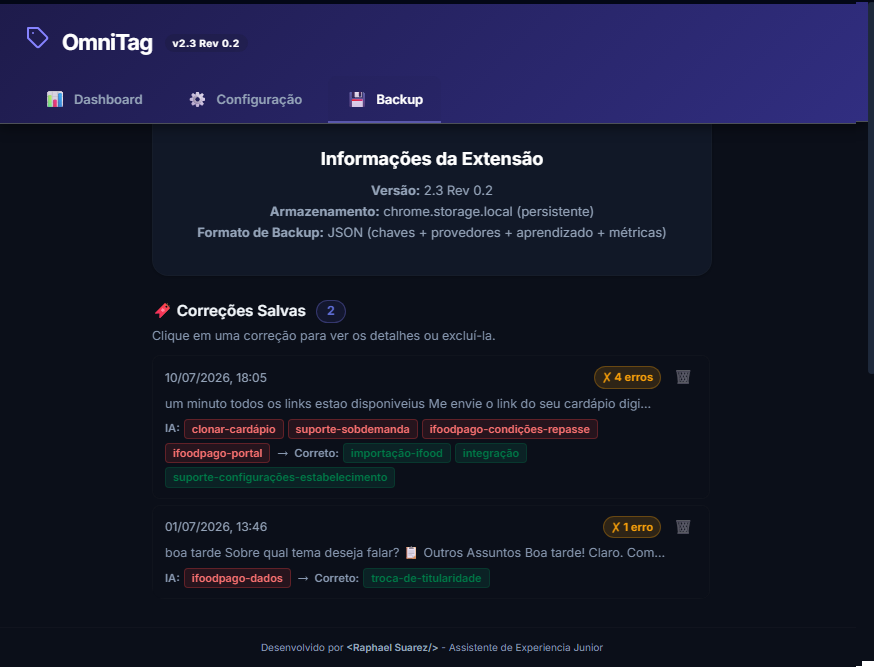

Copiloto Autônomo de
Triagem, Auditoria e Categorização
O OmniTag é uma extensão de alta performance projetada para operar em tempo real sobre o Freshdesk / Freshworks. Ele analisa diálogos completos de atendimento, interpreta o contexto da solicitação do cliente, cruza com a taxonomia corporativa oficial da Anota.AI e disponibiliza a injeção instantânea das tags corretas diretamente no CRM.
Guia Visual da Interface e Usabilidade
Clique em qualquer imagem para expandir em tela cheia e tamanho original
Este guia visual apresenta detalhadamente como o OmniTag é renderizado na tela do atendente e como os gestores acompanham as métricas e configurações no painel da extensão. (Dica: clique em qualquer captura para ampliar em alta resolução).
1. O Widget de Operação (A Visão do Atendente)
Injetado no CRMA interface primária do OmniTag não obriga o atendente a sair da tela de atendimento. Ela é injetada de forma não-intrusiva na barra lateral direita do Freshdesk / Freshchat.

⏱ 1.4s).
2. O Dashboard Administrativo (Visão Gerencial & Métricas)
Métricas ReaisAcessado ao clicar no ícone da extensão no navegador, o painel principal entrega métricas consolidadas em tempo real sobre assertividade, histórico e consumo de tokens.

3. Gestão da Cascata: Telas de Configuração de Provedores
Alta DisponibilidadeA aba de Configuração permite ligar ou desligar provedores através de interruptores (toggles), cadastrar múltiplas chaves e definir a lista prioritária de modelos:
3.1 Google Gemini

Gestão de múltiplas chaves de API, seleção de chave principal e modelos gemini-2.5-flash, gemini-3.5-flash e gemini-3.1-flash-lite.
3.2 Groq (LPU)

Configuração de chaves Groq de ultra-baixa latência com modelos open-source Llama 3.3 70B e 3.1 8B.
3.3 OpenRouter

Hub agregador flexível com suporte a dezenas de modelos :free e open-source simultâneos.
3.4 Toqan (iFood AI Platform)

Suporte a ambientes internos corporativos com campo de Base URL customizada e polling assíncrono.
Visão Geral dos Interruptores Liga/Desliga (Toggles)

Permite ativar ou silenciar provedores inteiros com 1 clique, garantindo controle total da rotação de tráfego.
4. O Cérebro: Backup e Histórico de Aprendizado
Memória HumanaA aba de Backup preserva o capital intelectual gerado pela equipe. Toda vez que um atendente corrige a IA e clica no 🧠, o exemplo fica registrado na auditoria e pode ser exportado em JSON:
Exportação e Importação de Backup

Permite exportar todas as memórias, chaves e métricas em um arquivo JSON leve para compartilhamento com novas máquinas.
Log de Auditoria de Erros e Correções

Contraste visual de tags erradas sugeridas pela IA (vermelho) contra a correção humana homologada (verde).
Guia de Configuração e Chaves de API (Setup Passo a Passo)
Aprenda como obter suas chaves gratuitas e configurar o OmniTag em 3 minutos
Para que o OmniTag realize a inferência em tempo real, ele precisa de pelo menos uma chave de API ativa. Você pode configurar múltiplos provedores para garantir alta disponibilidade via failover automático:
Google Gemini (Padrão Recomendado)
Excelente velocidade e janela de 1M+ tokensPasso 1: Acesse o Google AI Studio e faça login com sua conta Google.
Passo 2: Clique no botão azul "Create API Key" (Criar chave de API).
Passo 3: Selecione ou crie um projeto e copie o código da chave que começa com AIzaSy....
Passo 4: No OmniTag, cole a chave no campo Google Gemini e clique em Salvar Configurações.
gemini-2.5-flash,
gemini-3.5-flash,
gemini-3.1-flash-lite
Groq (LPU Speed)
Inferência ultrarrápida (menos de 1 segundo)Passo 1: Acesse o Console do Groq e crie uma conta gratuita (login com GitHub ou Google).
Passo 2: Vá até a seção API Keys e clique em "Create API Key".
Passo 3: Dê um nome (ex: OmniTag) e copie a chave gerada que começa com gsk_....
Passo 4: Cole no campo Groq da extensão e salve.
llama-3.3-70b-versatile,
llama-3.1-8b-instant
OpenRouter (Modelos Gratuitos e Open-Source)
Hub agregador com dezenas de modelos :freePasso 1: Acesse o OpenRouter e crie sua conta.
Passo 2: Na aba Keys, clique em "Create Key".
Passo 3: Copie a chave que começa com sk-or-v1-... e cole na extensão.
glm-4.5-air:free
gpt-oss-120b:free
qwen3-next-80b:free
llama-3.3-70b:free
nemotron-3-super:free
Arquitetura de Módulos e Arquivos Reais
O código é estruturado de forma desacoplada para garantir estabilidade, segurança e separação clara entre a interface de usuário, injeção no DOM do Freshdesk e orquestração de IA:
manifest.json
Manifest V3
Configura permissões de storage e activeTab, host permissions de APIs e define os scripts injetados nos domínios *.myfreshworks.com.
tags_data.js
Dicionário Oficial
Armazena a matriz viva de objetos { name, description } contendo todas as tags homologadas para Suporte, Gestor, Financeiro, Pagamento Online e Atendimento.
content.js
Motor CentralO coração do sistema. Injeta os widgets na tela, extrai textos, executa a censura LGPD, orquestra as IAs em cascata, faz a leitura de Shadow DOM e registra as métricas.
popup.html / popup.js / popup.css
Painel de ControleInterface completa com 3 abas: Dashboard (gráficos de uso, acurácia e busca de chats), Configuração (gestão multi-chaves e provedores) e Backup.
Dicionário Estrito e Blindagem de Alucinações
Para garantir que os modelos de IA nunca inventem tags ou usem sinônimos não autorizados, o sistema despacha no prompt do modelo a lista e as regras estritas vindas do arquivo tags_data.js:
// Exemplo de estrutura em tags_data.js:
const tagsData = [
{
"name": "suporte-pedido",
"description": "Utilizar nos casos onde pedidos são verificados. Ajustes na configuração dos pedidos..."
},
{
"name": "ifoodpago-crédito",
"description": "Utilizar nos casos de questionamentos sobre repasses relacionados ao crédito..."
}
// ... mais de 140 tags corporativas estruturadas
];Motor em Cascata de Alta Disponibilidade (Fallback Engine)
O OmniTag v2.6 implementa uma fila de tolerância a falhas com rotação inteligente de chaves e failover automático entre provedores:
// Exemplo de execução em cascata com Timeout de segurança (content.js):
async function fetchWithTimeout(resource, options) {
var controller = new AbortController();
var id = setTimeout(() => controller.abort(), 30000); // 30s máx
options.signal = controller.signal;
try {
var response = await fetch(resource, options);
clearTimeout(id);
return response;
} catch (err) {
clearTimeout(id);
throw err; // Passa para a próxima chave ou provedor da fila
}
}Privacidade e Minificação de Dados (LGPD)
Nenhum dado pessoal sensível do cliente trafega para as APIs de IA. Antes de qualquer requisição, o texto é sanitizado e compactado:
function censorText(text) {
text = text.replace(/[a-zA-Z0-9._%+-]+@[a-zA-Z0-9.-]+\.[a-zA-Z]{2,}/g, '[EMAIL]');
text = text.replace(/\b\d{3}\.\d{3}\.\d{3}-\d{2}\b/g, '[CPF]');
text = text.replace(/\b\d{2}\.\d{3}\.\d{3}\/\d{4}-\d{2}\b/g, '[CNPJ]');
text = text.replace(/\b(?:\+?55\s?)?(?:\(?\d{2}\)?[\s-]?)?\d{4,5}[-\s]?\d{4}\b/g, '[TELEFONE]');
return text;
}Engenharia de Leitura do Freshdesk (Shadow DOM)
O Freshdesk moderno encapsula seus componentes em Shadow Roots isolados (fw-select, fw-tag, fw-input). O OmniTag utiliza 4 estratégias em cascata para garantir leitura 100% infalível:
.value do Freshworks Web Component:
Acessa o elemento fw-select de tags e extrai as tags ativas diretamente do array de objetos ou strings do componente.
deepQueryAll):
Percorre recursivamente toda a árvore DOM e sub-árvores Shadow DOM procurando por elementos fw-tag.
.tag-item, .ember-power-select-multiple-option).
innerText renderizado na tela e cruza com a lista estrita de tags oficiais do sistema, eliminando opções ocultas.
Métricas de Assertividade e Feedback Loop (🧠)
A versão 2.6 calcula a taxa de acerto por Atendimento (em vez de por tag individual), garantindo números estatisticamente precisos e reais:
Registrado automaticamente quando o atendente clica em qualquer uma das tags sugeridas pela IA para injetar no Freshdesk.
Registrado quando nenhuma tag da IA serviu, o atendente preencheu a tag correta manualmente e clicou no 🧠 (Cérebro).
Como o Aprendizado Calibra a IA nos Próximos Atendimentos:
Cada correção salva no learningData é injetada no início do prompt da IA como exemplo prático de decisão humana (Few-Shot Prompting):
// Dossiê enviado à IA no próximo atendimento:
APRENDIZADO - EXEMPLOS DE CORREÇÕES ANTERIORES:
- Conversa: "Cliente solicita segunda via de boleto..."
IA sugeriu: [suporte-pedido]
Tags corretas: [fin-segunda-via]
Use esses padrões para ajustar suas sugestões no chat atual.Histórico de Chats com Extração de ID Real e Busca
O sistema extrai com precisão o identificador numérico da conversa do Freshworks (ex: /conversation/1166658770879150) e permite busca instantânea por ID ou data no modal do Dashboard:
function extractChatId(url) {
if (!url) return '';
var convMatch = url.match(/\/conversation\/(\d+)/i);
if (convMatch) return convMatch[1]; // Ex: 1166658770879150
var ticketMatch = url.match(/\/tickets?\/(\d+)/i);
if (ticketMatch) return ticketMatch[1];
// Fallback para outros formatos
}